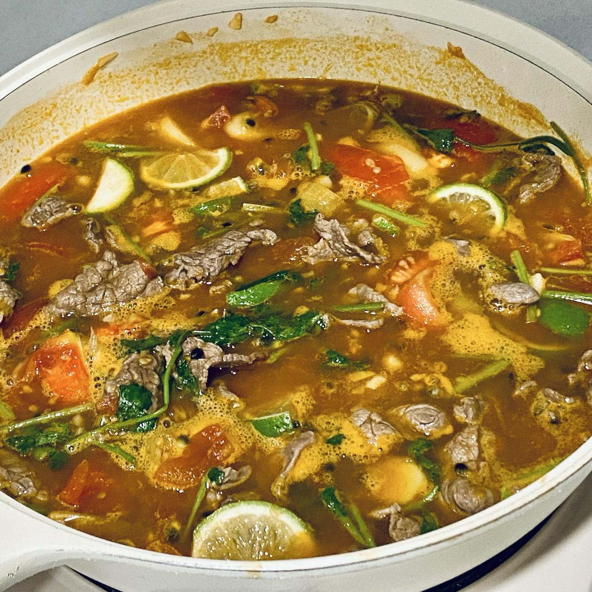
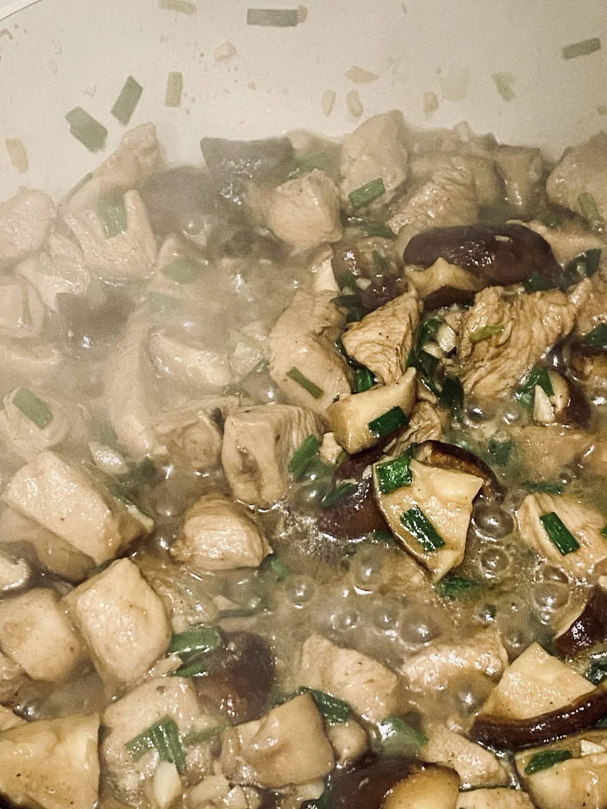

日常#4
皮肤手术、酸汤牛肉、香菇鸡块、空洞骑士
🎶 你知道天空有多蓝 - 椅子乐队 The Chairs
{kind=link}
上次说的疥，去医院看了，开了些消炎的药，医生说等成熟后要开口挤掉，要等它软一些。在家涂了鱼石脂，白色的脓点越长越大，睡觉时不知不觉就破了。但是疥还是没好，只是红肿范围小了些，但还是有些硬，过几天再去医院看看怎么处理。
女朋友某天晚上身上突然出现了很多红斑，腿上也有一些紫癜， 不痛也不痒，怀疑是过敏，大晚上去看了急诊。做了常规检查都没什么异常，开了一些过敏药回家观察，所幸后面慢慢消退了。后面挂了一个皮肤科又看了一下，也没看出什么问题。不知道为什么莫名其妙就出现红斑，怪让人担心的，希望真的没什么事。
我手上有一个凸起肉块也很久了，之前拍了片像是囊肿，去看疥的时候顺便约了手术，这周也约上了。
尽管没有恶化，但凸起来看着不舒服，偶尔也会觉得那附近有些不适，担心会恶化，所以还是做个手术切除一下。
虽然是一个小手术，也还是会紧张。
手术躺在手术床上进行，医生会在手术部位打麻醉，也就打针的时候痛点，后面手术就感受不到痛觉了，只剩下一点触觉。躺着有个好处，看不到医生操作，看不见就不容易害怕，不过也依然会紧张。医生切好了还把囊肿提起来给我看，一个血红的小肉球，后面会送去活检。手术大概花了 50 分钟，结束之后再观察了 15 分钟，就回家了。手术花费了一千多，医保报销了一半，最贵的费用就是缝合的费用。
术后有些痛，但也不是很痛，就是手臂不能太用力，还好手臂弯曲，打字等简单的用手没太大影响。需要每天去换药，14 天左右拆线，伤口要保持干燥，不能碰水，洗澡会有点麻烦。手臂不能太用力，有的事情也不方便，例如拧摩卡壶，多用点力伤口就会比较痛，看来后面要改喝手冲了。
《纸上染了蓝》 里有一段话：
刚做了母亲的你，对你的孩子大概也有同样的愿望吧，健康，快乐。
仿佛很简单，不过，我们也知道健康快乐需要很多祝福很多支持。
是啊，都希望身体健康，但健康不是希望就能获得的，是需要很多付出的，要常去锻炼，注意饮食和休息。
希望身边的人都能健康、快乐。
出门去医院做手术，本来打算坐地铁，但雨有些大，就改成了打车。
车行驶在雨里，给人一种安全感，雨再大，但在车里是干燥的、安全的，不会被打湿。
雨水打在车上，声音密密麻麻的，听着很舒服，让人很放松。有人喜欢听白噪音，或许是因为这些声音它们听起来都不刺耳，它们是重复的，容易让人联想到大自然、外面的世界，于是会有一种放松的感觉。
我还挺喜欢雨天的，尤其是睡觉的时候，最好狂风暴雨、电闪雷鸣，被窝里的我越是感到安全。但如果要出门，我就很讨厌雨天，因为总会弄湿我的鞋子，地铁出口也会很堵。
又折腾了一下博客的样式。
移除了文章切换的标题效果，因为总是会有些卡顿，干脆移除算了。
看到别人博客里有子标题，而最近写的「日常」和「Album」其实也可以拆分子标题，就想加加看。
文章里面拆分很简单，使用 #+subtitle: 关键字就好了。首页是 sitemap，使用 org-publish 生成的1，看了半天代码以及问 LLM 才渲染成功。还有订阅流，因为从标题拆分了子标题，我希望子标题也出现在订阅标题中，需要处理一下。为了方便我从文件名大致知道内容，我还把子标题作为关键字写入到文件名中。
在调整首页子标题时，需要用到 flex 布局，导致 <li> 的 list-style 失效了。又琢磨怎么把原来的序号显示出来，最后弄着弄着，首页就变得像是一个目录页。我还挺满意这个设计的，有种把博客变成了一本书的感觉，读者打开博客首先看到的是一个目录，找自己感兴趣的内容阅读。序号、虚线都不是重要的东西，因此它们的颜色我都设置得比较浅，避免干扰。
你觉得怎么样呢？
I have made this longer than usual because I have not had time to make it shorter.
我经常会翻看自己的博客，有时会发现一些错别字或者格式问题；有时会觉得某些句子可以有更好的表达。2
我是不是写完博文之后太急着发布，而没有好好审视和编辑呢？
博文一旦发出去之后就会有人看，而大多数文章读者也不会反复读，对于读者而言，往往第一次读是什么样就是怎么样，当我后面编辑调整了，可能就只有之后的读者才会看到了。
所以或许有必要在发布之前多看几遍，直到自己满意后再发布，把这篇博文最好的一面呈现给读者。
{kind=link}

百香果番茄酸汤牛肉
食材：百香果若干个、番茄三四个、牛肉 400+g3、蒜头一颗、姜一小块、小米辣或泡椒、青柠一两个、香菜一小把
- 牛肉切好后，用蚝油、生抽、淀粉腌制一阵子，给牛肉本身一个味道
- 掏空百香果，得到一碗百香果汁；番茄去皮，一个切块，剩下的都切丁；柠檬切片；香菜切碎；
- 切一些蒜末、一些姜片、辣椒段，热油将这些调料炒香
- 加入番茄丁，翻炒一阵子，直到番茄出汁，然后加入适量水，大概够烫牛肉的分量就行
- 加入百香果汁，搅拌一下然后调味，加入两三勺生抽、一勺盐、几勺糖以及一些鱼露。4
- 加入牛肉煮熟，再把番茄块、柠檬片、香菜碎丢进去，咕噜一下，搅拌一下即可
{kind=link}

食材：鸡胸肉或鸡腿肉、香菇、蒜、香葱
- 鸡肉切成小块，然后加入蚝油、生抽、胡椒粉、淀粉腌制 20 分钟以上，入个味
- 香菇切成小块、 切蒜末、香葱切碎，靠近葱白比较硬的部分用来炒菜，葱叶部分最后用来点缀
- 腌制好鸡肉后，热油翻炒到表面都熟了，然后先盛出来
- 热油炒香蒜末，加入香菇炒到变软，再加入鸡肉混合翻炒，如果鸡块比较大，怕不熟，就盖上锅盖焖煮一下
- 加入葱叶翻炒均匀即可
空洞骑士去到了灵魂圣所，这里的音乐使用管风琴演奏的，给人一种庄严又有点阴森的感觉。
打败了灵魂大师，大师死的时候到处乱飞，有点鬼畜，从它身上获得了下冲的技能，又有不少地方可以去了。
灵魂圣所这里，很多虫子为了灵魂而变得扭曲，有的变成了错误，像是一滩史莱姆，不禁想起了 钢之炼金术师 中的合成兽，也是一种邪道，最终炼出了不伦不类的东西。
灵魂大师死了之后好像变成了灵魂暴君，打了不知道多少次，太受苦了，主要是他到处跑很难打到，有的招数也不会躲。好不容易打完了第一阶段，竟然还有二阶段，而且基本没有回血的空间，每次打得都很紧张。终于打死了，也就给了不少的灵魂，没我需要的技能，可恶。
攒了不少钱，刚好捡到商店钥匙，狠狠消费了一波，钱多到把商店都买空了。多的钱不知道去哪里消费，记得有个存钱的 NPC，本来想看看存满会不会触发什么剧情，结果去到发现它跑路了，可恶啊，要再给我碰到，高低得揍它一顿。
后面又探索了很多地图，但是可能是缺少某个技能，不少地方都过不去，玩着玩着就有点不知道做什么了，或许要把跑过的地图再跑一遍看看。
脚注:
see also: The Jerry Seinfeld Guide to Writing | David Perell
当编辑阶段开始时[…]我遵循一个三步编辑过程：
结构：整理我的想法是首要任务，因为在创作阶段之后它们会变得一团糟。我使用 岛屿与桥梁 将我的想法整理成逻辑顺序。有时，我会打印出单独的段落，把它们全部扔在地板上，然后手工整理。
清晰度：最终，我希望我的文字清晰到让读者忘记他们正在阅读。因此在这个阶段，我删除任何可能给读者带来障碍的内容。如果一个想法令人困惑，我就重新组织它。如果一个句子令人困惑，我就重写它。如果一个词是不必要的，我就删除它。
风格：在最后这个阶段，我不会添加新的想法。我不再是生成性的，而是寻找描述我已经想出的想法的完美方式。为此，我 丰富我的词汇，添加生动的细节，并通过改变句子的长度和其中的词语来 赋予我的写作节奏。
可以买牛肉自己切，自己切可能切不了那么薄，需要煮的时间可能长一些，但不容易煮老；也可以买现成的牛肉片，但要注意煮的时间，很容易老。
调料的味道可以一边加一边尝，刚开始的时候少一些，不够了再加。糖的作用是中和酸味，让酸味柔和；鱼露大概是增香的，我尝不出来。